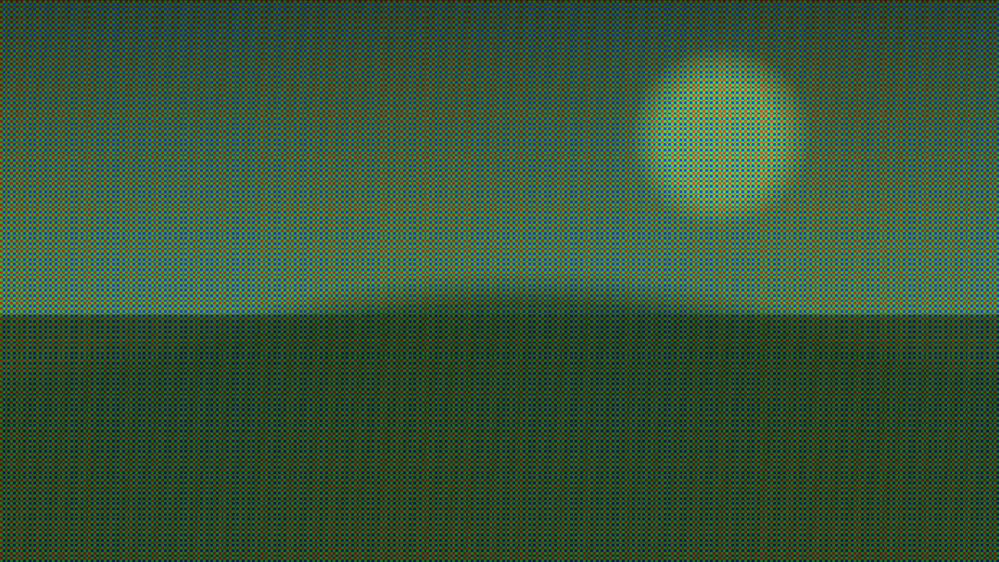

A camera only measures one colour per pixel
A sensor is a grid of tiny spots called sites. Each site sits under one colour filter, so it counts one colour only.
A pixel is the dot in the finished photo. Two of its three colour numbers were never measured — software guesses them.
PSNR 41.5 dB — the guess score. How close the guess is to the real
picture; higher is better.
SNR 28.0 dB — the signal score. How far the signal sits above the
noise.
The frame
roll 24 · 384 × 216 sites · 12 bitLeft: the numbers the sensor recorded. Right: the photo the camera built from them.
Drag the divider, or use the arrow keys.
Click a pixel to see its numbers.



Four layers above every pixel
patch 24 × 24 · 859,703 electronsStart with one site. Light passes a microlens, which gathers it. Then a colour filter, which keeps one colour. Then a photodiode, which counts the electrons that land. Then a circuit, which reads the count.
Pull the layers apart to see that order.

One colour per pixel
test chart · RGGBEach site has one filter, so it records one colour. The filters repeat every two sites: red, green, green, blue. Half of them are green, because your eye reads green detail best.
A red site never records green or blue. Those two numbers aren't stored somewhere else in the file — they were never there.
So the camera fills each missing colour from the neighbours it does have. That's a guess. The next sheet is about how the guess is made.
The missing green
method trial · row 91, column 193A red or blue site has no green reading. Its two green neighbours — one along the row, one down the column — are all the evidence there is.
Pick one and see which answer lands closer.
- Nearest neighbour
- Copies the closest site that measured the colour, so edges look like a zip.
- Bilinear
- Averages the neighbours, so diagonal edges smear.
- Hamilton–Adams
- Picks one direction first, so a near-horizontal edge can staircase.
- Malvar–He–Cutler
- Bilinear plus a sharpening step, so fine colour bleeds.
| Method | PSNR | Colour error |
|---|---|---|
| Nearest neighbour | 36.98 dB | 2.98 |
| Bilinear | 41.26 dB | 2.01 |
| Hamilton–Adams | 41.54 dB | 1.30 |
| Malvar–He–Cutler | 41.65 dB | 1.40 |
Hamilton–Adams: 41.54 dB on this frame.
Highest wins; the bars are ranked, not absolute.
Every method below does this at every site, then repeats it for red and blue. They all do the same job — demosaicing, which just means filling in the missing colours. They differ in which neighbours they trust.
One pixel, in numbers
row 108, column 192Click any pixel in the frame at the top. You'll see what the engine had for that site: the one colour it measured, the two it guessed, and the arithmetic behind each.
The values are levels, written DN. One level is one step on a scale that runs from 0 to 4095.
- PSNR
- 41.5dB
- Colour error
- 1.30DN
- Filter split
- 25% · 50% · 25%
- Compute time
- 213ms
This site counted red only: 1282. The camera guessed green (1582) and blue (1672).
red · measured
Measured at this site.
green · guessed
The row changes less, so the row pair is used.
Change along the row 160. Change down the column 408.
blue · guessed
Green, plus the average colour difference from four diagonal neighbours.
Eight ways to print one frame
darkroom · print 01Those numbers aren't a picture yet. Printing is how they become one. Expose freezes the frame. The measurements don't change; only the print does.
Each treatment stands in for a real choice of paper, toner or developer strength.

The frame as the engine made it. Nothing added. Every other treatment changes the print, not the photo.